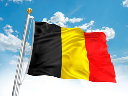

Waffle adalah makanan sejenis kue yang berasal dari belgia
meskipun asal usulnya lebih kuno dan tersebar di berbagai wilayah Eropa. Di Belgia, waffle sangat populer dan memiliki beberapa varian, termasuk waffle Brussel dan waffle Liege. Asal Usul Kuno: Waffle, atau bentuk awal dari makanan ini, sudah ada sejak zaman Yunani kuno dengan nama "eblios". Perkembangan di Eropa: Waffle menyebar ke Eropa dan mengalami berbagai modifikasi, terutama di abad pertengahan dan Renaisans. Belgia dan Waffle: Belgia menjadi pusat perhatian terkait waffle, khususnya dengan munculnya Belgian Waffle yang terkenal. Varian Waffle Belgia: Waffle Brussel Berbentuk persegi, tebal, dan biasanya disajikan dengan topping manis. Waffle Liege Berbentuk oval, lebih tipis, dan terbuat dari adonan brioche dengan tambahan gula karamel. Popularitas Global: Waffle kemudian menyebar ke seluruh dunia, termasuk Amerika Serikat, dengan berbagai variasi dan adaptasi lokal. Jadi, meskipun waffle tidak secara eksklusif berasal dari satu negara, Belgia memiliki peran penting dalam sejarah dan popularitas waffle modern.